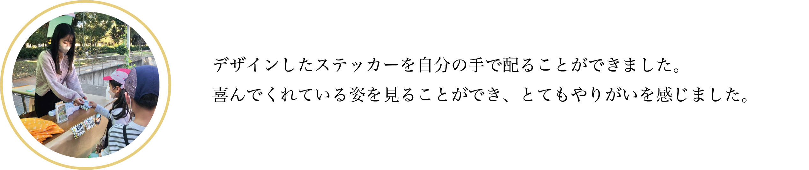

▲ 実際に市内に配布されたチラシ
卒業制作で地元である羽村市の「地域ブランディング」を行うことが決まり、羽村の魅力について市役所の方にインタビュー
したことから、新しく制作するＰＲグッズの制作依頼をいただきました。
2022年11月19日、20日の2日間に羽村動物園で行われた”愛情はむらまつり”のイベントにてキッズインカーステッカー
の配布を行いました。
スタンプラリーに参加した方々に、3種類のステッカーの中から1家族1枚選んでいただく形で配布しました。
1番人気はキリンのステッカーで子供たちに大人気でした。
このステッカーは現在も羽村市役所で配布を行っています。
(※無くなり次第終了となります)
